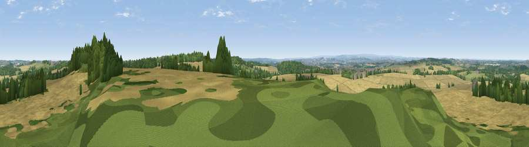

Viewpoint near Hickleton
#25209 in England · top 36% of its area beats it · near Hickleton · access?Where it is
The exact computed spot (SE 47525 06825). Click the marker for map links.
Public access: no public right of way or access land is recorded at this exact spot — it may be on private land. Computed from Natural England's CRoW access layer and OpenStreetMap rights of way — not the legal definitive map. Always verify locally.
The view, rendered

A 360° render of this exact spot computed from the terrain model, tree cover and land cover — summer colours, afternoon light, calibrated against photographs of famous viewpoints. Real trees, hedges and buildings will differ in detail.
The panorama
Grey silhouette: terrain skyline in each direction (720 bearings, Earth curvature and refraction included). Dashed green: skyline with trees (+15 m) and buildings (+8 m) as obstacles. Blue strip: how far the ground is visible on each bearing.
Where the view opens
Wedge length = distance to the farthest visible ground on that bearing (vegetation-aware). Rings at 10, 25 and 50 km.
What fills the view
70% cropland · 16% woodland · 10% grassland · 3% built-up
Angular shares of the visible panorama (visual magnitude), not map area. Landscape diversity 0.39 (0–1 Shannon).
Key numbers
More beautiful places nearby
The staircase of upgrades: each row has a higher view potential than everything closer. Driving times are estimates from straight-line distance, calibrated against real road routing — check an actual route before setting out.
| Place | Direction | Drive | Score |
|---|---|---|---|
| Viewpoint near Barnburgh | S · 3 km | ~7 min | 47.3 |
| Viewpoint near Great Houghton | WNW · 4 km | ~10 min | 52.5 |
| Viewpoint near Little Houghton | W · 5 km | ~11 min | 53.9 |
| Viewpoint near High Melton | SSE · 5 km | ~11 min | 58.5 |
| Viewpoint near Grimethorpe | WNW · 6 km | ~13 min | 63.8 |
| Hoyland Lowe | WSW · 13 km | ~23 min | 64.5 |
| Viewpoint near Maltby | SSE · 16 km | ~28 min | 70.7 |
| Viewpoint near Whitley | SW · 19 km | ~32 min | 72.1 |
53.55591, -1.28408 · source: screening · position refined by local search. Computed location — check access rights before visiting.